Node Families e2e — visual flow report
Per-step screenshots from the mock-wired Playwright journeys (design D1/D2). Hover/scroll each filmstrip; click an image to zoom.
operator lifecycle accept leave then reject
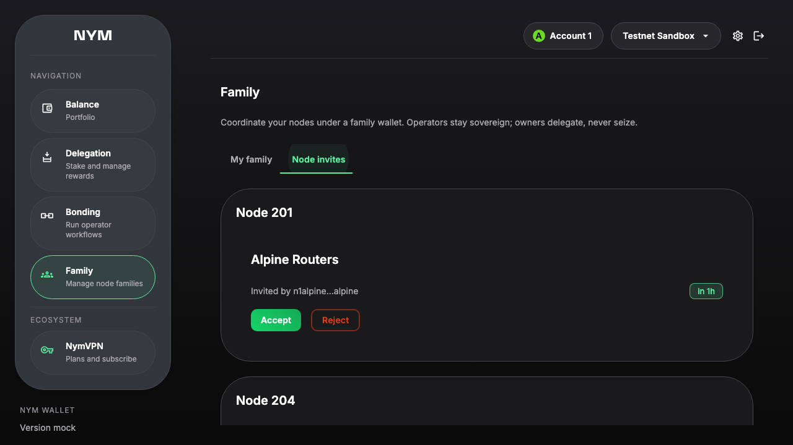
pending node invites
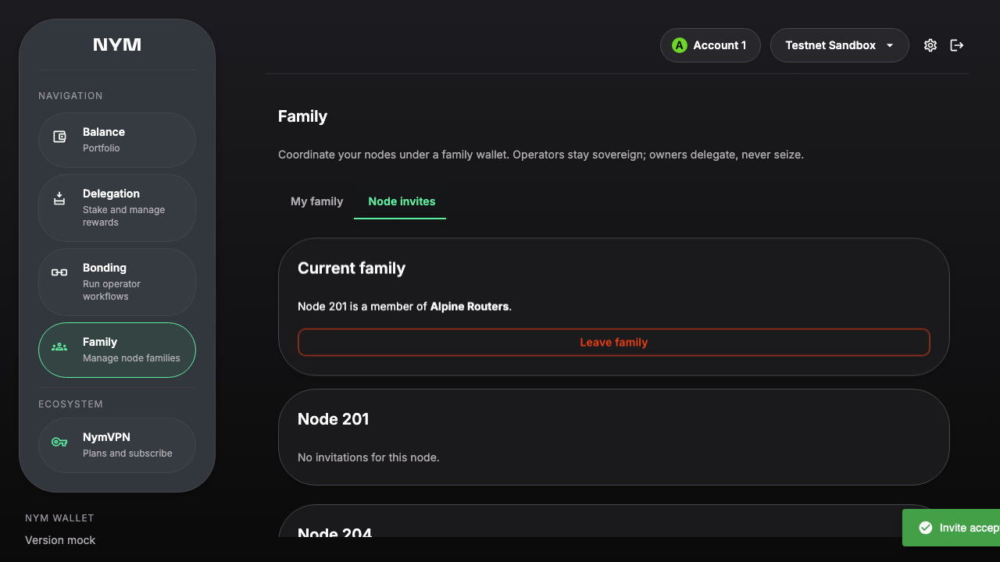
invite accepted
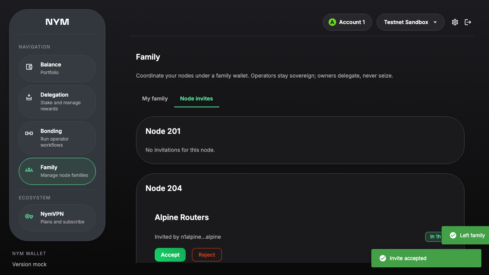
family left
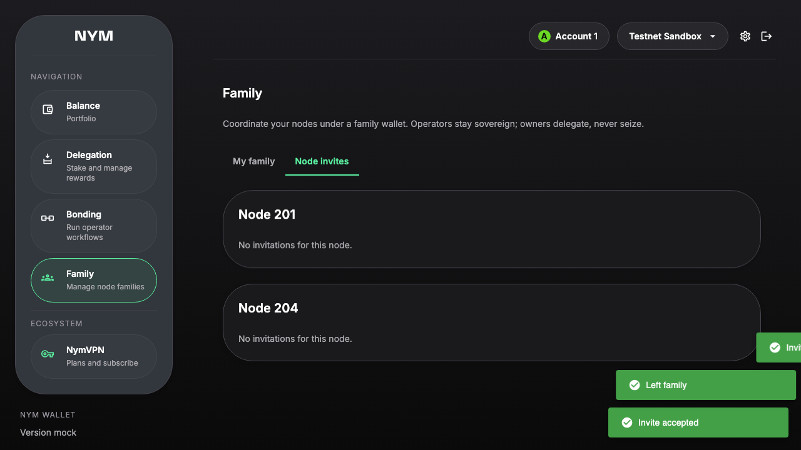
invite rejectedoperator page shows multi node invite states
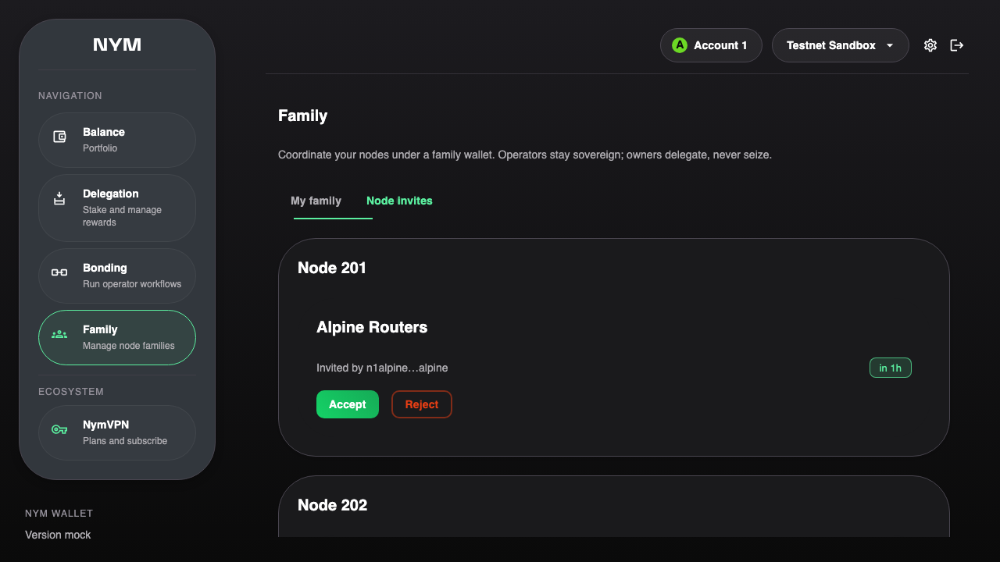
multi node invite statesowner lifecycle create invite accept kick disband
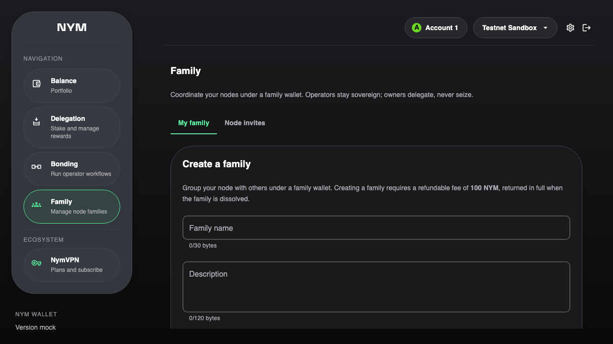
create family entry
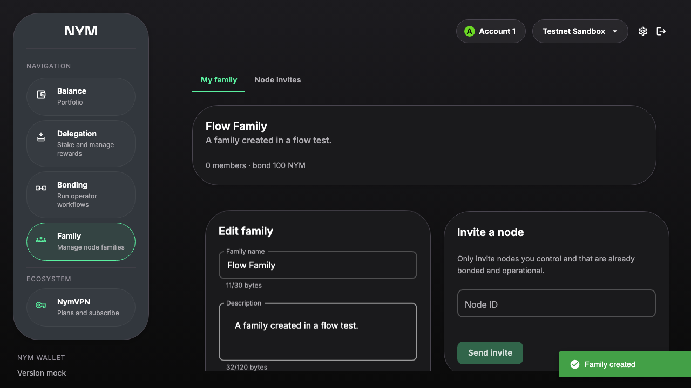
family created
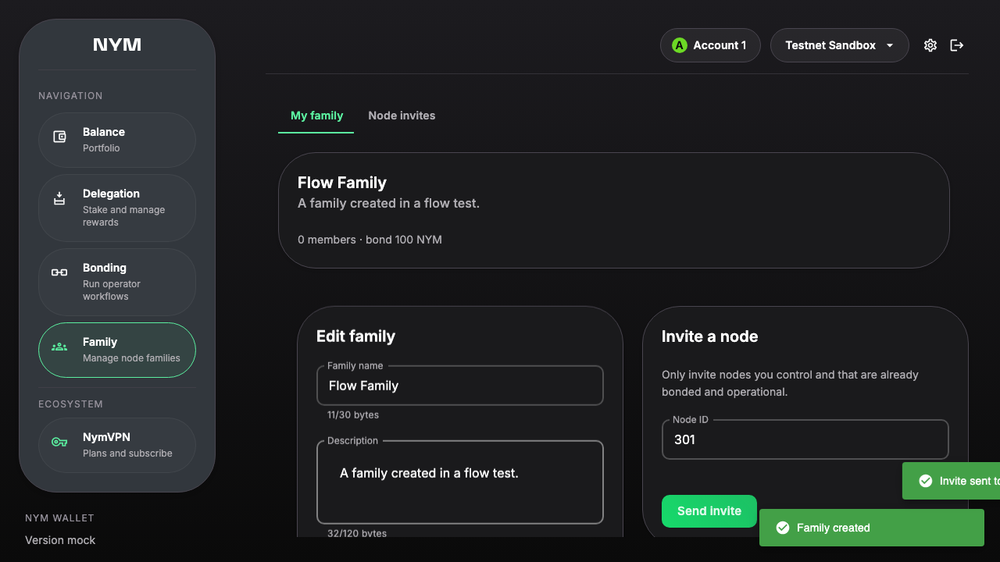
node invited pending
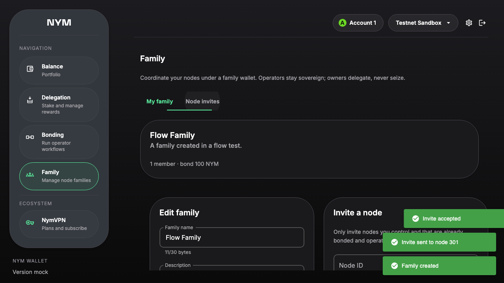
member joined
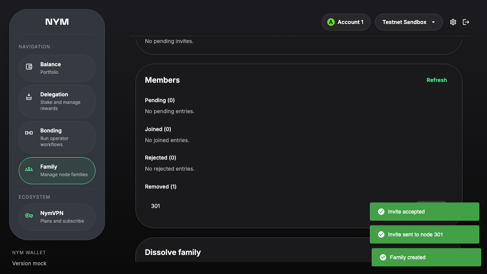
member kicked
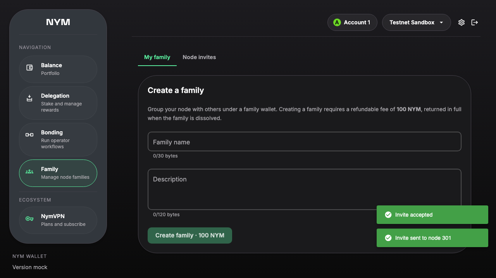
family disbanded